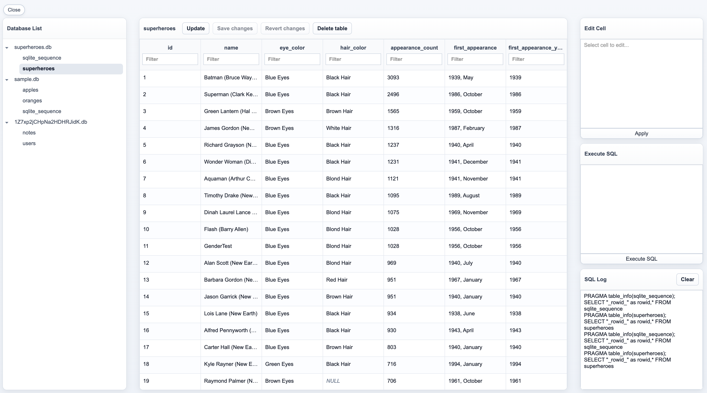

SQLite Wasm Viewer is a web-based SQLite browser for inspecting databases created by the SQLite Wasm module and stored in OPFS. It ships as an npm library you can drop into any app that uses SQLite in the browser — call showViewer() and get a full database inspector with no server required.
Built with TypeScript and compiled for distribution via Babel. Database access runs through @sqlite.org/sqlite-wasm inside a dedicated Web Worker, while the UI uses vanilla DOM APIs with a custom list virtualizer for table rendering. OPFS via the File System Access API is used to scan and resolve database files.